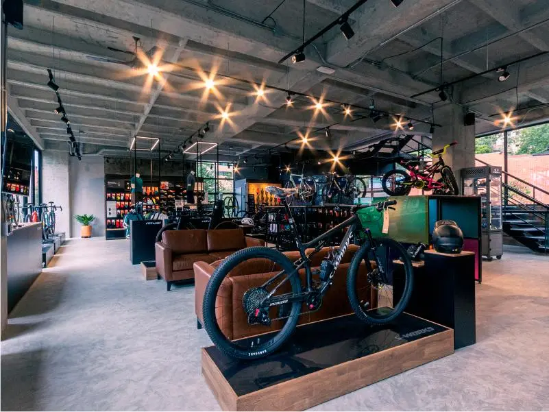
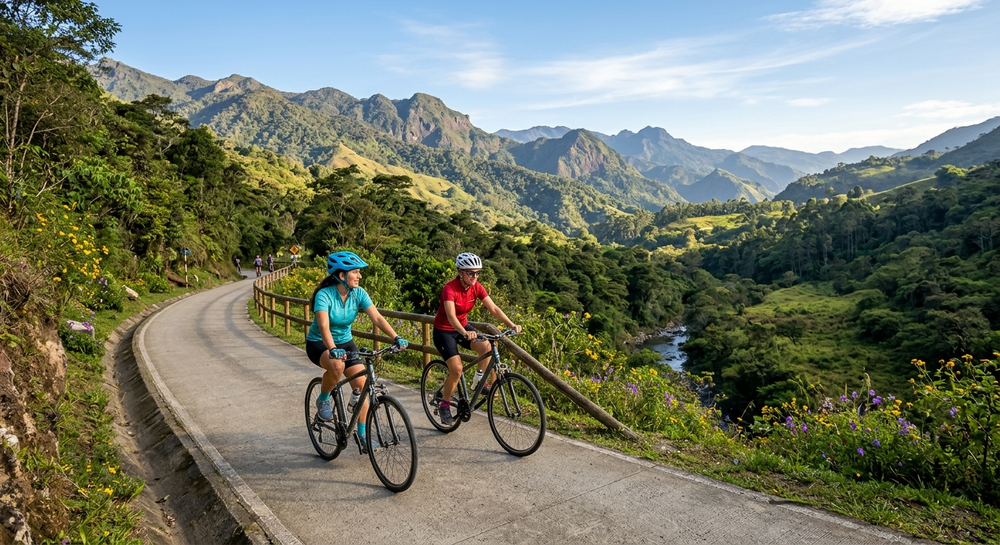

Bicicletas de Montaña (MTB)
Diseñadas para dominar terrenos técnicos, raíces, piedras y descensos con el máximo control y suspensión.

¡Te damos la bienvenida a Rueda Libre!
El punto de partida para tu próxima gran aventura sobre dos ruedas, tanto si buscas la adrenalina de los senderos más exigentes como si prefieres devorar kilómetros de asfalto, aquí encontrarás la compañera perfecta para tu viaje. Encuéntranos
En Rueda Libre, creemos que la vida se vive mejor sobre dos ruedas. Somos apasionados del ciclismo y tu punto de partida ideal para la próxima gran aventura que decidas emprender. Nacimos con el propósito de conectar a cada ciclista con su compañera de viaje perfecta. Sabemos que cada ruta es única: por eso, tanto si buscas la adrenalina pura al conquistar los senderos más exigentes de la montaña, como si prefieres la libertad de devorar kilómetros de asfalto en la carretera, aquí encontrarás el equipo, la confianza y el impulso que necesitas. No solo alquilamos bicicletas; compartimos tu pasión por explorar, superar límites y disfrutar del camino. Prepara tu ruta, nosotros nos encargamos del resto. ¡Tu viaje empieza aquí!
Disponemos de bicicletas para alquiler ver tabla de precios. de gama alta, puestas a punto por mecánicos profesionales antes de cada salida, incluye casco y candado de seguridad:
Diseñadas para dominar terrenos técnicos, raíces, piedras y descensos con el máximo control y suspensión.
Modelos aerodinámicos, ligeros y rápidos para exprimir cada vatio de potencia sobre el pavimento.
Combina fuerza de ciclista con la energía de un motor eléctrico integrado para reducir el esfuerzo al avanzar.

Pasos para alquilar nuestras bicicletas:
Que beneficios tienes alquilando con nosotros:
